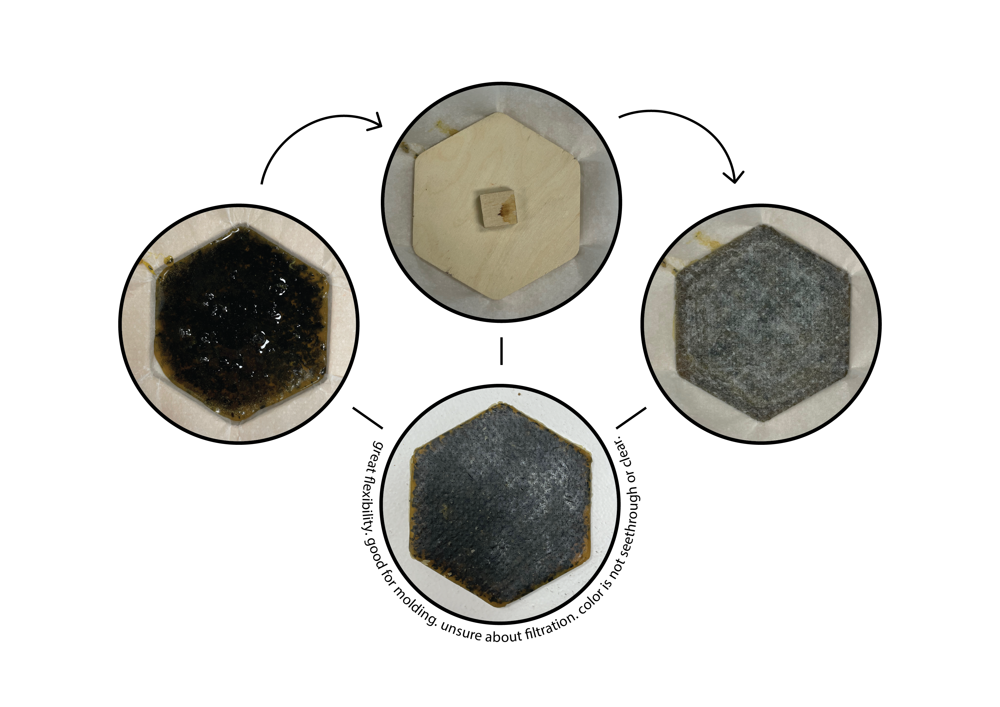
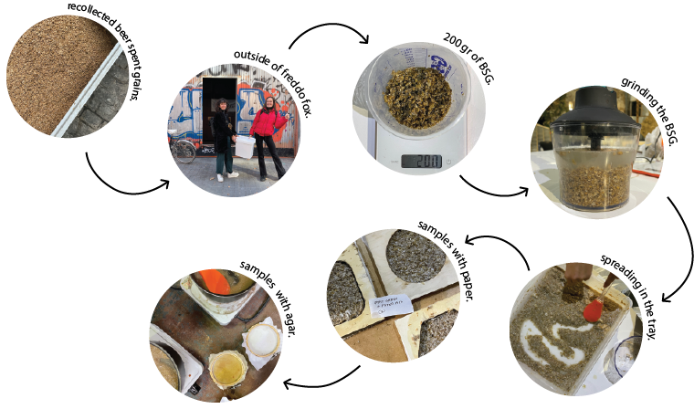

{kind=link}
{kind=link}
9. Designing for the next billion seconds.
What exactly are a billion seconds? To be precise, a billion seconds translate to 31.69 years.
Read MoreFebruary 02, 2022
This course started with Lara Campos, specialist in biomaterials, teaching us the basics on this subject. The common uses, explorations, approaches and research. Biomaterials have been around for a while but we still have a long way to go before implementing them into our daily objects. They have, as everything, prons and cons. In my personal opinion I think they're a great solution to single use objects due to its duration. Which is not necessarily a bad thing. As a biomaterial, this means that when we can no longer use the product and it gets discarded it can go back to nature in a natural way and complete its life cycle. There are many approaches towards biomaterials and uses, one examples is putting seeds into the biomaterial so when it is discarded in the land it can bloom flowers. Every ingredient has different properties which adds to the material output properties. So there's two way to use them. One is to design the material specifically for the use you need and the other is to do a material exploration and then decide what to do with what you came uo with.
After understanding the principles of biomaterials and the basic formula behind it which is: biopolymer+plasticizer+additives+solvent, we went and tried for ourselves.

20 gr. gelatine + 250 ml. water + 15 gr. glycerin + 2 ml. vinegar + additives.
10 gr. agar + 200 ml. water + 2 ml. glycerin + 2 ml. vinegar + additives.
12.5 grs. alginate + 500 ml. water + 30 ml. glycerin + additives +calcium chloride (30gr. CaCl/500ml. H2O).
45 grs. pine resin + 15 ml. alcohol + 5 gr. carnauba wax + 40/60 gr. food waste.

After this class' experimentation I still wanted to try some other things that relate to my intervention project. I want to experiment with a biomaterial that can help bioremediate an ecosystem. From my research I found out that oysters, mussels and algaes help clean the ocean waters of pollutants. So I want to try and do a biomaterial that can helo clean this waters. This is a challenge because it need to be a material that is water resistant but that can also filtrate water which is where I'm stuck right now. So first we tried with other recipes like orange peel and coffee scrubs for a big fabric and some others with dry leaves.
For my intervention I'm starting to recollect some waste seafood from restaurants and see if I can create a biomaterial out of that and if it would help bioremediate the ecosystem after the species is dead which in the case of application to a biomaterial it would be. My first try was with a pine resin mix with wakame algae and some spirulina. I added a bit more carnauba wax to make it more flexible but realised maybe it didn't need that because the algae is already very flexible. The material came out very bendable and moldable which is a good property if I want to apply it onto flippers or diving equipment, the only thing I need to test is the water resistance and filtration. I also want to try doing biomaterials out of oysters or mussel shells as they also help bioremediate the ocean waters. I just need to figure out a recipe to make because these shells are more tricky to handle.
This are the final results we came up with as a group, each made out of a different recipe and foodwaste.

For the second week of this class we did an assignment to map some places around poblenou where we could gather food waste from to make biomaterials.
After finding some places to collaborate we chose to experiment with Beer Spent Grains from a brewery close to IAAC called Freddo Fox Brewery. They provided the freshly used grains and we went to try different things with it. We made a miro board with some options of recipes we could try and we decided to use the wet ones to try and do recycled paper with it. We tried first just with the grains and then we tried adding pieces of paper. We also did an agar agar recipe to compare it when we do another sample with the dry grains that are still drying naturally.
What exactly are a billion seconds? To be precise, a billion seconds translate to 31.69 years.
Read More
Analizing existing situations in order to become agents of change.
Read More